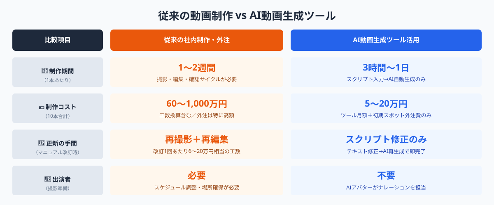
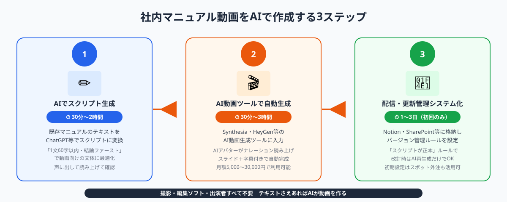

社内マニュアル動画の制作が「撮影ありき」では続かない理由
「業務マニュアルを動画にしたい」というニーズは多くの企業で生まれています。テキストマニュアルは読み飛ばされやすく、新人が実際の操作手順を理解するまでに時間がかかるという課題があるためです。しかし従来の動画マニュアル制作には高いハードルがありました。
① 制作コストが高すぎる
外部制作会社に依頼すると1本あたり30〜100万円、社内で制作しても出演者のスケジュール調整・撮影機材・編集ソフトのライセンス・編集工数を合わせると10〜30万円程度かかります。業務ごとに10〜50本のマニュアル動画が必要な企業では、総コストが膨大になります。
② 更新のたびに撮り直しが発生する
業務フローが変わるたびに動画を撮り直す必要があります。出演者の都合・スタジオ予約・再編集の工数が重なり、現場では「マニュアルが古いとわかっていても更新できない」という状況が常態化します。
③ 出演者の確保が難しい
動画マニュアルは「誰かが出演しなければならない」という思い込みから、ベテラン社員や上長の時間を占有してしまいます。建設業や製造業では現場担当者を撮影に呼ぶことへの抵抗感も大きく、制作が進まないまま放置されるケースも多くあります。
AIによる動画自動生成はこれらの課題をすべて解決します。出演者は不要、撮影機材は不要、編集の専門知識も不要です。テキストさえあれば動画が完成します。
スクリプト（テキスト）を入力するとAIアバターがナレーションを読み上げ、スライドや字幕と組み合わせた動画を自動生成するSaaSツール。Synthesia（英国）・HeyGen（米国）・Fliki（米国）・Colossyan（英国）などが代表的で、2026年現在は日本語ナレーションにも対応している。月額費用は5,000〜3万円程度。
AIを使った社内マニュアル動画の制作手順3ステップ

次の3ステップを踏むことで、既存の社内マニュアル（Word・Excel・Notion・紙のメモ）をそのままAI動画マニュアルに変換できます。
STEP 1：スクリプト（台本）をAIで作成する（30分〜2時間）
動画マニュアルの完成度は、スクリプトの質でほぼ決まります。ChatGPTやClaudeに既存のテキストマニュアルを貼り付け、以下のようなプロンプトで動画用スクリプトへの変換を依頼します。
「以下の業務マニュアルを、3分程度のナレーション動画用スクリプトに変換してください。条件：①結論（何をするための動画か）を冒頭30秒で伝える ②1文は60字以内の短文にする ③手順は1〜5のステップ形式で記述する ④難しい専門用語には簡単な言い換えを添える。マニュアル本文：[既存マニュアルを貼り付け]」
生成されたスクリプトは必ずスマートフォンで声に出して読み上げてみてください。聞いて意味がわかる文章になっているかを確認することが、動画の品質を上げる最重要チェックポイントです。1本の動画は3〜5分を目安にし、長い業務フローは複数に分割します。
STEP 2：AI動画生成ツールでスライド＋ナレーション動画を自動生成する（30分〜3時間）
スクリプトが完成したら、AIツールに入力して動画を生成します。2026年現在、以下のツールが社内マニュアル用途に使いやすいとして評価されています。
・Synthesia：日本語対応AIアバター多数、スライドとナレーションの合成が安定している。月額約29ドル〜。
・HeyGen：リアルなアバターと自然な日本語TTS（音声合成）が特徴。スクリーンレコーディングとの組み合わせも可能。月額約29ドル〜。
・Fliki：既存のPowerPointスライドをそのまま読み込んでナレーション付き動画に変換できる。月額約21ドル〜。
・Colossyan：教育・研修用途への特化機能（インタラクティブな問いかけ挿入等）を持つ。月額約27ドル〜。
操作手順やシステム画面の操作動画（スクリーンレコーディング）が必要な場合は、Loomで画面操作を録画し、HeyGenやFlikiのAIナレーション機能と組み合わせる方法が現場での評判が高いです。Loom自体にも簡易なAI文字起こし・章立て機能が備わっているため、撮影→スクリプト抽出→AI動画化という流れをほぼ自動化できます。
STEP 3：動画を社内配信し更新管理をシステム化する（1〜3日）
生成した動画をどこで管理・共有するかの設計が、長期運用の成否を分けます。以下の2つのパターンが中小企業に向いています。
・パターンA（シンプル）：Notionページにスクリプトと動画を一緒に格納し、マニュアル改訂履歴をNotionのバージョン履歴で管理する。費用ほぼゼロ・導入が最も早い。
・パターンB（しっかり管理）：SharePoint・Googleドライブにフォルダ構造を作り、Microsoft Streamや社内LMS（TalentLMSなど）と連携させる。受講記録や完了確認を管理したい場合に向く。
更新管理の鉄則は「スクリプトファイル（テキスト）こそが正本」と定めることです。動画は「スクリプトから生成されるアウトプット」として扱うと、改訂時にスクリプトを修正→AIで再生成→動画差し替えという3ステップで最新版に保てます。

導入コスト比較：従来制作 vs AI制作
社内マニュアル動画10本（各3〜5分）を制作する場合の概算コストを比較します。
従来の社内制作（撮影・編集ソフト使用）
撮影・出演者の拘束：延べ20〜30時間 × 社員コスト
編集ソフトライセンス（Adobe Premiere等）：月額約6,000円〜
編集工数：1本あたり6〜10時間 × 10本 = 60〜100時間
合計コスト目安：60〜200万円相当（社員工数換算含む）
外部制作会社への委託
1本あたり30〜100万円 × 10本 = 300〜1,000万円
AI動画生成ツール活用（スポット外注で導入設計込み）
AI動画ツール月額：5,000〜30,000円
初期設定・ワークフロー整備のスポット外注費用：3〜10万円（1回限り）
スクリプト作成工数（ChatGPT活用）：1本あたり30〜60分 × 10本 = 5〜10時間
動画生成工数：1本あたり30〜90分 × 10本 = 5〜15時間
合計コスト目安：5〜20万円相当（継続費用は月額のみ）
従来比で約90〜95%のコスト削減が可能です。さらに「更新のたびに発生するコスト」が劇的に下がることが大きなメリットです。従来手法では改訂1回あたり6〜20万円相当の工数が発生しますが、AI制作なら1本あたり1〜2時間のスクリプト修正と30〜90分の再生成のみです。マニュアル改訂が多い企業ほど、導入後の投資対効果が高まります。
AI動画マニュアル制作をさらに加速するスポット外注の活用
AIツールの選定・プロンプト設計・配信環境の構築を社内だけで進めようとすると、「どのツールが自社に合うか判断できない」「スクリプト生成プロンプトを試行錯誤する時間がない」という壁にぶつかることがあります。このような場合にスポット外注（タスク単位での外部エンジニア・AI活用専門家への依頼）が有効です。
スポット外注で依頼できる業務の例
・既存テキストマニュアルをスクリプトに一括変換するプロンプトの設計と検証（5〜15万円・3〜5日）
・AI動画生成ツールの選定調査・自社業務への適合評価レポート作成（3〜8万円・2〜3日）
・NotionやSharePoint上での動画マニュアル管理テンプレート構築（5〜15万円・3〜7日）
・LMS（学習管理システム）との連携設定・受講記録の自動収集システム開発（10〜30万円・2〜4週間）
スポット外注の最大の強みは「必要なタスクだけを外部に出せる」点です。AIツールの選定だけ依頼して後は社内で進める、初回の10本だけスクリプト生成を依頼してその後のノウハウを社内に移管するといった柔軟な使い方ができます。フリーランスや副業エンジニアに依頼する場合は時給5,000〜10,000円・タスク単位の固定料金で動くケースが多く、大手コンサルティング会社に依頼するよりも大幅にコストを抑えられます。
ANKENでは動画マニュアル制作のワークフロー整備やAIツール導入支援を得意とするエンジニア・コンサルタントとのマッチングを無料で相談いただけます。既存マニュアルの棚卸しから動画化の優先順位付け、ツール選定・配信環境構築まで、必要な範囲だけスポット発注できます。
よくある質問
- Q. 社内マニュアル動画の制作をAIだけで完結させることはできますか？
- A. はい。ChatGPTでスクリプトを作成し、SynthesiaやHeyGenなどのAI動画生成ツールを使えば、撮影・編集なしで完成します。品質確認と最終承認だけが人の仕事です。
- Q. 動画マニュアルのAI化に必要な費用はどれくらいですか？
- A. ツール費用は月額5,000〜3万円程度です。初期の運用設定をスポット外注した場合の費用は3〜10万円が目安で、その後は月額だけで継続できます。
- Q. 既存のテキストマニュアルをそのまま動画化できますか？
- A. できます。既存マニュアルのテキストをAIに入力してスクリプトに変換し、そのままAI動画生成ツールに渡す流れが最も効率的です。Word・NotionどちらのテキストでもOKです。
まとめ
社内マニュアル動画のAI自動作成は、スクリプト生成（AI）→動画生成（AI動画ツール）→配信・更新管理（社内ツール整備）の3ステップで、従来の動画制作費の90%削減と更新コストほぼゼロという状態を実現します。2026年現在、日本語ナレーションの品質は実用に十分なレベルに達しており、建設業・製造業・サービス業を問わず現場のマニュアル動画化に使えます。
進め方の要点は3つです。①既存テキストマニュアルをそのままAIスクリプトに変換することから始める、②1本の動画を3〜5分に絞りシリーズ化する設計にする、③「スクリプトが正本」というルールを定めて更新管理をシンプルに保つ。AIツール選定や配信環境の構築で迷う場合は、スポット外注を活用して必要なタスクだけを外部に出すと最短でスタートを切れます。